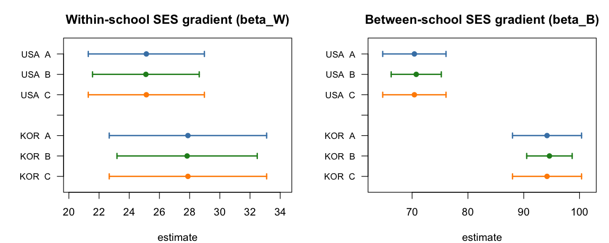

13 PISA 2022: Three Pipelines, Side by Side
13.1 The answer on real data
Here are all three pipelines, run on PISA 2022 reading for the USA and Korea. The estimands are the SES gradients \(\beta^W\) (within-school) and \(\beta^B\) (between-school), on the PISA score scale.
| country | pipeline | \(\beta^W\) est (SE) | \(\beta^B\) est (SE) | diagnostic |
|---|---|---|---|---|
| USA | A — per-PV orthodox | 25.13 (1.96) | 70.41 (2.89) | 10 MCMC-equivalent fits |
| B — stacked-PSIS | 25.10 (1.80) | 70.74 (2.29) | \(\hat k_{\max}=0.07\) | |
| C-Direct — stacked-CCC | 25.13 (1.96) | 70.41 (2.89) | 1 MCMC — = A exactly | |
| Korea | A — per-PV orthodox | 27.89 (2.66) | 94.17 (3.15) | 10 MCMC-equivalent fits |
| B — stacked-PSIS | 27.83 (2.37) | 94.60 (2.08) | \(\hat k_{\max}=0.04\) | |
| C-Direct — stacked-CCC | 27.89 (2.66) | 94.17 (3.15) | 1 MCMC — = A exactly |

Three things to read off this.
Pipeline C-Direct reproduces Pipeline A exactly — point and standard error. This is the central result, and on real data it is now exact in both coordinates. Because Pipeline C-Direct is centered at the external \(\bar\beta_{\text{Rubin}}\) that Pipeline A reports and its covariance is the Cholesky-calibrated reshaping of the real stacked draws onto the very \(T_{\text{MI}}\) A assembles by Rubin pooling, the two pipelines return the same numbers: \[
\max\bigl|\hat\beta_C-\hat\beta_A\bigr| = 0\ \text{(point, exact)}, \qquad
\max\bigl|\text{SE}_C-\text{SE}_A\bigr| = 2.7\times10^{-15}\ (\text{USA}),\ \ 2.2\times10^{-15}\ (\text{Korea}).
\] These standard errors come from the real pipeline_c_direct calibrating the real brms draws — there is no synthetic draw cloud anywhere in the computation. The one-MCMC report carries the orthodox ten-fit report’s uncertainty by construction, not by luck; the simulation (Section 10.1) showed this on known-truth data, and here it holds on PISA. The raw stacked posterior mean does sit a short distance from \(\bar\beta_{\text{Rubin}}\) — \(0.33\) (USA) and \(0.43\) (Korea), the R3a→R3b gap of Section 3.1 — but that gap is a verification diagnostic; it is not carried into C-Direct’s report, which is centered at \(\bar\beta_{\text{Rubin}}\) exactly.
Pipeline B agrees in point, and its \(\hat k\) is tiny — but read its standard errors carefully. The worst per-PV Pareto \(\hat k\) is \(0.07\) (USA) and \(0.04\) (Korea), far inside the green tier: the importance sampling you asked us to scrutinize (C1) is stable on these data without any tempering, exactly as Section 11.1 anticipated, and B’s point estimates track A and C-Direct to within a few tenths. (In the controlled experiment of Section 10.1 the same gate fires at \(\hat k=0.83\) on a simulated \(J=150\) design — a reminder that it can and does breach; the real reading data here simply does not stress the proposal that hard.) Its standard errors, however, run below the orthodox reference — most visibly for the between-school slope, where B reports \(2.29\) vs A’s \(2.89\) for the USA and \(2.08\) vs \(3.15\) for Korea, intervals up to a third narrower. The mechanism is structural: Pipeline B’s \(M\) per-PV estimates are reweightings of a single shared draw cloud, so they are correlated, and their between-imputation spread is mechanically smaller than the spread of \(M\) independently refit models — the \(O_p(S^{-1/2})\) reuse of one proposal that Section 7.1 flagged. (Part of the gap is also that Pipeline A’s ten-refit \(B\) is itself a noisy estimate of the target, so this is estimator-against-estimator, not against truth; but the direction is clear, and B’s narrower intervals are anti-conservative — too short, with an under-coverage risk.) The lesson is sharp: a small \(\hat k\) certifies that the importance sampling is stable, not that B’s multiple-imputation variance reproduces the orthodox target \(T_{\text{MI}}\). This is precisely why the recommended default is C-Direct — which targets \(T_{\text{MI}}\) directly and so matches A exactly — with B kept as the diagnostic that flags when the stacked proposal is in trouble. The tempering and two-MCMC levers (Section 11.1) stay in reserve for data that stress the proposal harder.
13.2 What it cost
Pipeline A required ten fits’ worth of work; Pipelines B and C-Direct required one stacked MCMC each, sharing it. The BRR-Fay target — the object your comments C2 and C4 asked about — was assembled in about ten seconds per country from the 810 fast lme4 refits, and is shared by all three. The single stacked brms fit was the real cost (about ten minutes for the USA and twenty-six for Korea at this \(43{,}000\)–\(64{,}000\)-row scale, a pilot-grade setting); ten such fits, the orthodox path, would have been hours. The economy is the MCMC count, one against ten — precisely the claim of Section 5.1, now visible on real data.
13.3 An honest note on the substance
These numbers reproduce the project’s established reading estimates (\(\beta^W\approx25\) for the USA, \(\approx28\) for Korea), which is reassurance that the pipeline is computing the right thing. They are not, however, the parent paper’s substantive headline: that story concerns what happens to the cross-country between-school gap under the exact two-stage PISA weights, and it is a separate analysis. What this chapter establishes is only — and exactly — what it set out to: on real PISA data, the per-PV orthodox pipeline, the stacked-PSIS pipeline, and the stacked-direct pipeline give the same point answer — C-Direct reproducing the orthodox intervals exactly, the stacked-PSIS pipeline’s running a touch narrower — and the last of them does it with a single MCMC. The methodological claim of the proposal holds on the data it was written for.